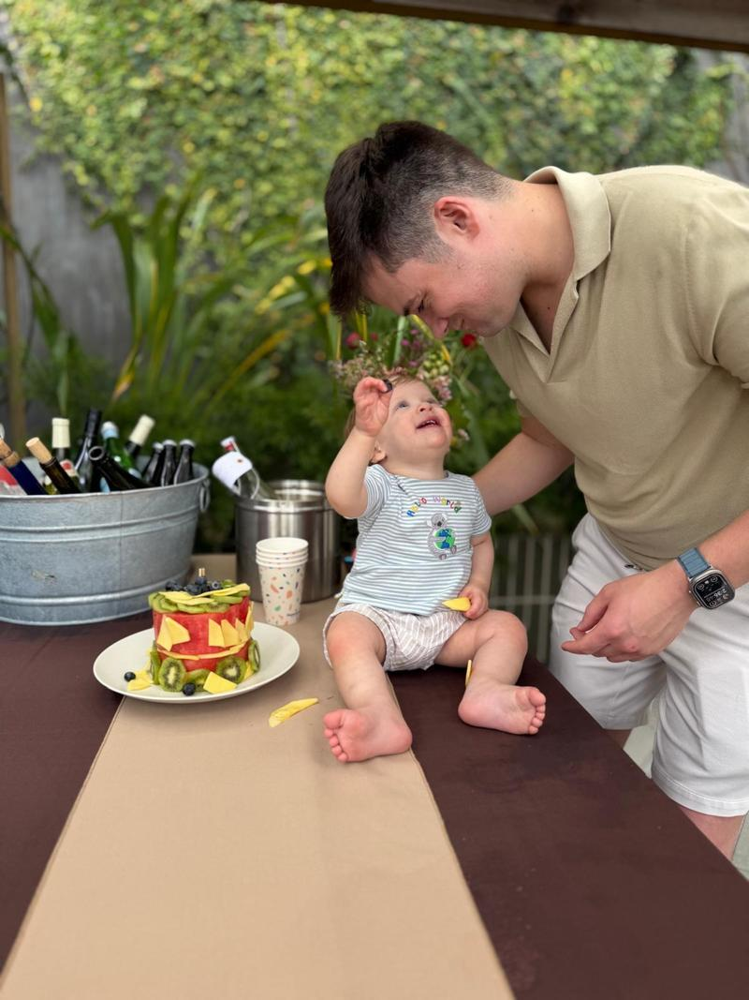

Here is a photo of my family. I love them more than anything.

Images have power, I hope. Normally we try to be pretty private, but in this case I am sharing a photo in the hopes that it might dissuade the next person from throwing a Molotov cocktail at our house, no matter what they think about me.
The first person did it last night, at 3:45 am in the morning. Thankfully it bounced off the house and no one got hurt.
Words have power too. There was an incendiary article about me a few days ago. Someone said to me yesterday they thought it was coming at a time of great anxiety about AI and that it made things more dangerous for me. I brushed it aside.
Now I am awake in the middle of the night and pissed, and thinking that I have underestimated the power of words and narratives. This seems like as good of a time as any to address a few things.
First , what I believe.
*Working towards prosperity for everyone, empowering all people, and advancing science and technology are moral obligations for me.
*AI will be the most powerful tool for expanding human capability and potential that anyone has ever seen. Demand for this tool will be essentially uncapped, and people will do incredible things with it. The world deserves huge amounts of AI and we must figure out how to make it happen.
*It will not all go well. The fear and anxiety about AI is justified; we are in the process of witnessing the largest change to society in a long time, and perhaps ever. We have to get safety right, which is not just about aligning a model—we urgently need a society-wide response to be resilient to new threats. This includes things like new policy to help navigate through a difficult economic transition in order to get to a much better future.
*AI has to be democratized; power cannot be too concentrated. Control of the future belongs to all people and their institutions. AI needs to empower people individually, and we need to make decisions about our future and the new rules collectively. I do not think it is right that a few AI labs would make the most consequential decisions about the shape of our future.
*Adaptability is critical. We are all learning about something new very quickly; some of our beliefs will be right and some will be wrong, and sometimes we will need to change our mind quickly as the technology develops and society evolves. No one understands the impacts of superintelligence yet, but they will be immense.
Second , some personal reflections.
As I reflect on my own work in the first decade of OpenAI, I can point to a lot of things I’m proud of and a bunch of mistakes.
I was thinking about our upcoming trial with Elon and remembering how much I held the line on not being willing to agree to the unilateral control he wanted over OpenAI. I’m proud of that, and the narrow path we navigated then to allow the continued existence of OpenAI, and all the achievements that followed.
I am not proud of being conflict-averse, which has caused great pain for me and OpenAI. I am not proud of handling myself badly in a conflict with our previous board that led to a huge mess for the company. I have made many other mistakes throughout the insane trajectory of OpenAI; I am a flawed person in the center of an exceptionally complex situation, trying to get a little better each year, always working for the mission. We knew going into this how huge the stakes of AI were, and that the personal disagreements between well-meaning people I cared about would be amplified greatly. But it’s another thing to live through these bitter conflicts and often to have to arbitrate them, and the costs have been serious. I am sorry to people I’ve hurt and wish I had learned more faster.
I am also very aware that OpenAI is now a major platform, not a scrappy startup, and we need to operate in a more predictable way now. It has been an extremely intense, chaotic, and high-pressure few years.
Mostly though, I am extremely proud that we are delivering on our mission, which seemed incredibly unlikely when we started. Against all odds, we figured out how to build very powerful AI, figured out how to amass enough capital to build the infrastructure to deliver it, figured out how to build a product company and business, figured out how to deliver reasonably safe and robust services at a massive scale, and much more.
A lot of companies say they are going to change the world; we actually did.
Third , some thoughts about the industry.
My personal takeaway from the last several years, and take on why there has been so much Shakespearean drama between the companies in our field, comes down to this: “Once you see AGI you can’t unsee it.” It has a real "ring of power” dynamic to it, and makes people do crazy things. I don’t mean that AGI is the ring itself, but instead the totalizing philosophy of “being the one to control AGI”.
The only solution I can come up with is to orient towards sharing the technology with people broadly, and for no one to have the ring. The two obvious ways to do this are individual empowerment and making sure democratic system stays in control.
It is important that the democratic process remains more powerful than companies. Laws and norms are going to change, but we have to work within the democratic process, even though it will be messy and slower than we’d like. We want to be a voice and a stakeholder, but not to have all the power.
A lot of the criticism of our industry comes from sincere concern about the incredibly high stakes of this technology. This is quite valid, and we welcome good-faith criticism and debate. I empathize with anti-technology sentiments and clearly technology isn’t always good for everyone. But overall, I believe technological progress can make the future unbelievably good, for your family and mine.
While we have that debate, we should de-escalate the rhetoric and tactics and try to have fewer explosions in fewer homes, figuratively and literally.